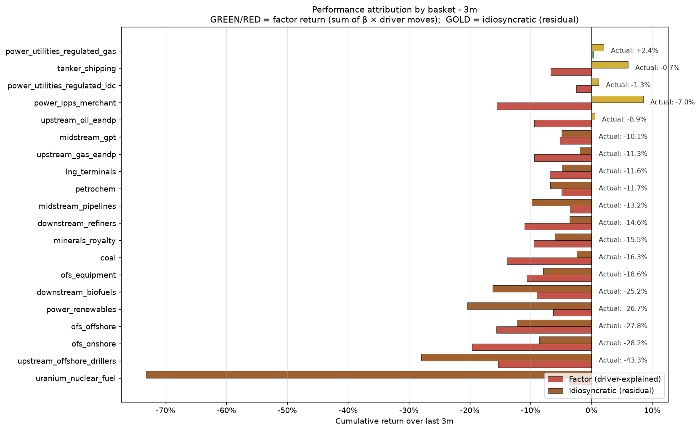
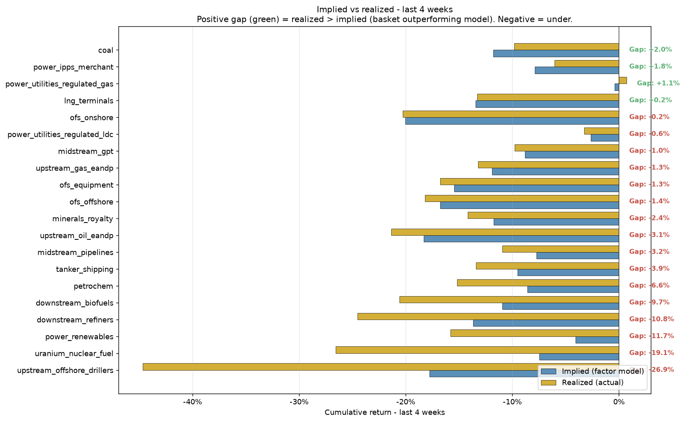
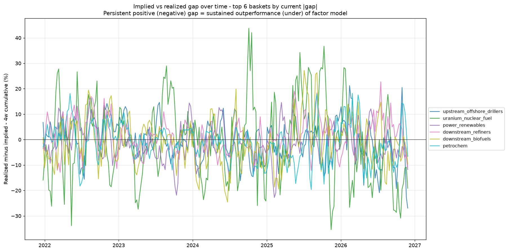

Phase 4 - Performance Attribution & Implied vs Realized
Decomposes recent returns into factor (driver-explained) and idiosyncratic (residual).
How to read attribution: for each basket, ACTUAL return = FACTOR return + IDIOSYNCRATIC return.
Factor return is what the basket's historical betas would predict given the actual driver moves over the window.
Idiosyncratic is everything else - could be unmodeled factors, news, mispricing, or noise.
A large positive idio means the basket outperformed what its driver model predicts; large negative means underperformed.
This is the lens for "what's actually moving here that I should investigate."
1. Basket attribution - 3 month

Top idio outperformers (3m)
| Basket | Actual | Factor | Idio |
|---|
| power_ipps_merchant | -7.0% | -15.5% | +8.5% |
| tanker_shipping | -0.7% | -6.7% | +6.0% |
| power_utilities_regulated_gas | +2.4% | +0.3% | +2.0% |
| power_utilities_regulated_ldc | -1.3% | -2.5% | +1.2% |
| upstream_oil_eandp | -8.9% | -9.4% | +0.5% |
| upstream_gas_eandp | -11.3% | -9.4% | -2.0% |
| coal | -16.3% | -13.9% | -2.4% |
| downstream_refiners | -14.6% | -11.0% | -3.6% |
Top idio underperformers (3m)
| Basket | Actual | Factor | Idio |
|---|
| uranium_nuclear_fuel | -76.9% | -3.7% | -73.2% |
| upstream_offshore_drillers | -43.3% | -15.4% | -28.0% |
| power_renewables | -26.7% | -6.3% | -20.4% |
| downstream_biofuels | -25.2% | -9.0% | -16.2% |
| ofs_offshore | -27.8% | -15.6% | -12.2% |
| midstream_pipelines | -13.2% | -3.4% | -9.8% |
| ofs_onshore | -28.2% | -19.6% | -8.6% |
| ofs_equipment | -18.6% | -10.6% | -8.0% |
2. Implied vs realized - last 4 weeks

| Basket | Realized 4w | Implied 4w | Gap |
|---|
| upstream_offshore_drillers | -44.7% | -17.8% | -26.9% |
| uranium_nuclear_fuel | -26.6% | -7.5% | -19.1% |
| power_renewables | -15.8% | -4.1% | -11.7% |
| downstream_refiners | -24.5% | -13.7% | -10.8% |
| downstream_biofuels | -20.6% | -10.9% | -9.7% |
| petrochem | -15.2% | -8.6% | -6.6% |
| tanker_shipping | -13.4% | -9.5% | -3.9% |
| midstream_pipelines | -11.0% | -7.7% | -3.2% |
| upstream_oil_eandp | -21.4% | -18.3% | -3.1% |
| minerals_royalty | -14.2% | -11.8% | -2.4% |
| coal | -9.8% | -11.8% | +2.0% |
| power_ipps_merchant | -6.0% | -7.9% | +1.8% |
| ofs_offshore | -18.2% | -16.8% | -1.4% |
| ofs_equipment | -16.8% | -15.5% | -1.3% |
| upstream_gas_eandp | -13.2% | -11.9% | -1.3% |
| power_utilities_regulated_gas | +0.7% | -0.4% | +1.1% |
| midstream_gpt | -9.8% | -8.8% | -1.0% |
| power_utilities_regulated_ldc | -3.3% | -2.7% | -0.6% |
| ofs_onshore | -20.3% | -20.1% | -0.2% |
| lng_terminals | -13.3% | -13.5% | +0.2% |
Gap over time - top 6 baskets by current |gap|

3. Top idiosyncratic name movers (3m)
↑ Outperformed factor model
| Ticker | Name | Node | Actual | Factor | Idio |
|---|
| SEI | Solaris Energy Infrastructure | ofs_onshore | +12.7% | -29.8% | +42.5% |
| TLN | Talen Energy | power_ipps_merchant | +16.1% | -12.3% | +28.4% |
| RRC | Range Resources | upstream_gas_eandp | +16.0% | -10.2% | +26.2% |
| GFR | Greenfire Resources | upstream_oil_eandp | +23.8% | -1.6% | +25.4% |
| FRO | Frontline | tanker_shipping | +13.8% | -9.7% | +23.5% |
| DHT | DHT Holdings | tanker_shipping | +15.1% | -5.3% | +20.4% |
| APA | APA Corporation | upstream_oil_eandp | +5.9% | -10.9% | +16.8% |
| INSW | International Seaways | tanker_shipping | +7.5% | -9.3% | +16.8% |
| TEN | Tsakos Energy Navigation | tanker_shipping | +5.8% | -9.9% | +15.7% |
| NI | NiSource | power_utilities_regulated_gas | +11.3% | -0.4% | +11.7% |
| CEG | Constellation Energy | power_ipps_merchant | -12.1% | -23.7% | +11.6% |
| OGE | OGE Energy | power_utilities_regulated_gas | +12.1% | +1.0% | +11.1% |
| COP | ConocoPhillips | upstream_oil_eandp | +3.9% | -7.0% | +10.9% |
| TK | Teekay Corporation | tanker_shipping | +3.2% | -7.1% | +10.4% |
| ED | Consolidated Edison | power_utilities_regulated_gas | +11.4% | +1.3% | +10.1% |
↓ Underperformed factor model
| Ticker | Name | Node | Actual | Factor | Idio |
|---|
| SOC | Sable Offshore | upstream_offshore_drillers | -218.5% | -15.3% | -203.2% |
| XIFR | XPLR Infrastructure (ex-NEP) | power_renewables | -60.7% | -10.9% | -49.7% |
| CLMT | Calumet | downstream_refiners | -52.2% | -8.1% | -44.1% |
| HE | Hawaiian Electric Industries | power_utilities_regulated_gas | -32.6% | +11.0% | -43.5% |
| ACDC | ProFrac Holding | ofs_onshore | -59.6% | -25.3% | -34.3% |
| KOS | Kosmos Energy | upstream_oil_eandp | -55.8% | -25.6% | -30.2% |
| DEC | Diversified Energy | upstream_gas_eandp | -16.2% | +13.8% | -30.0% |
| CLB | Core Laboratories | ofs_onshore | -43.6% | -14.3% | -29.4% |
| NESR | National Energy Services Reunited | ofs_onshore | -62.8% | -35.5% | -27.3% |
| OII | Oceaneering International | ofs_offshore | -45.9% | -18.7% | -27.2% |
| PUMP | ProPetro | ofs_onshore | -58.0% | -31.3% | -26.7% |
| GPRE | Green Plains | downstream_biofuels | -31.1% | -4.7% | -26.4% |
| XPRO | Expro Group | ofs_onshore | -39.3% | -13.7% | -25.6% |
| KGS | Kodiak Gas Services | midstream_gpt | -34.7% | -10.4% | -24.3% |
| HESM | Hess Midstream | midstream_gpt | -27.5% | -5.3% | -22.2% |